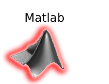

The GProxemic API was built to help robots adapt their proxemic zone automatically depending on environment, culture, country or region. This responsiveness acquired by the robot after using the API, ensures an improvement in socialization between robots and humans.


Connecting to rosbridge...
Connected


Icons made by Freepik from www.flaticon.com
Leaflet | Map data © OpenStreetMap contributors, Imagery © Mapbox